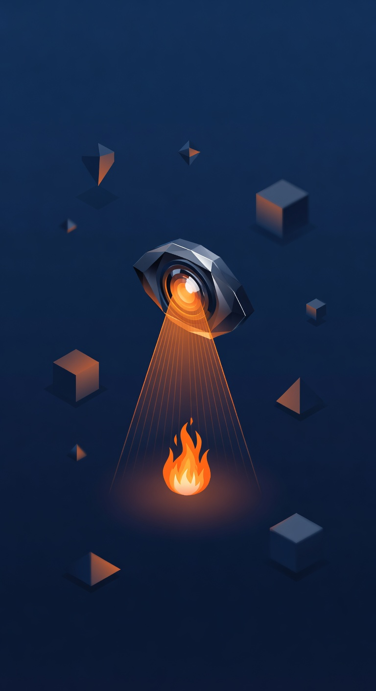
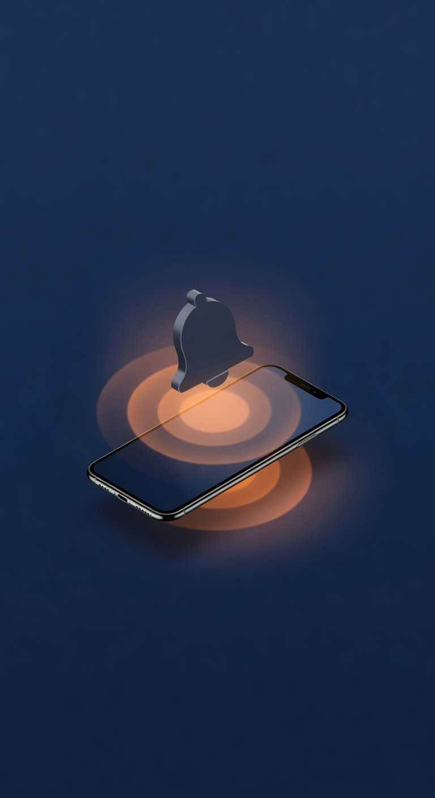

Mô hình YOLOv8 với độ chính xác 88.2% giám sát camera liên tục, phát hiện ngọn lửa ngay khi vừa xuất hiện.

Push notification kèm ảnh sự cố ngay cả khi bạn đi vắng. Không bỏ lỡ bất kỳ khoảnh khắc nào.
Servo định hướng vòi phun đúng vị trí ngọn lửa, relay kích hoạt máy bơm nước — không cần con người can thiệp.